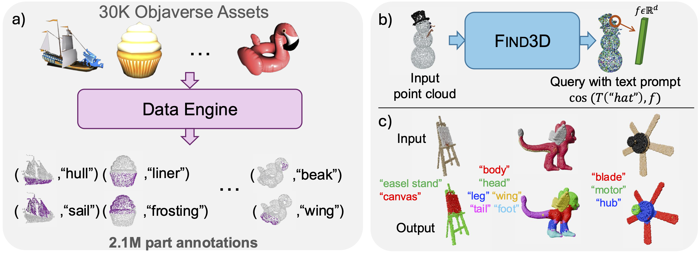
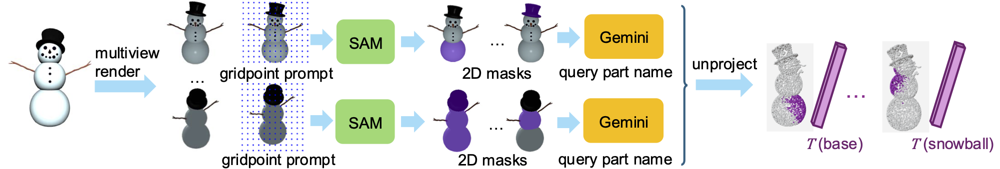

The ability to locate parts in an object is important in embodied applications. However, prior works studying this capability are limited to a small number of object types (such as chairs and tables), and only allow queries for a predefined set of parts. These methods are called "closed-world" segmentation methods. Our method, called Find3D, lifts 3D part segmentation to the open world - you can query any part in any object based on any text query. This is achieved by a powerful data engine which leverages 2D foundation models for creating training data, and a contrastive-based recipe for training a scalable 3D model. Our method allows us to train a model from 30K diverse 3D assets from the internet (from the Objaverse dataset) with 1.5M annotated parts, without any human annotation. Our model provides strong performance and generalization across multiple datasets, with up to a 3× improvement in mIoU over the next best method. Find3D is also 6× to over 300× faster than existing baselines. To encourage research in general-category open-world 3D part segmentation, we also release a benchmark for general objects and parts.
Our method, called Find3D, works on diverse objects from Objaverse.
We also provide reasonable segmentation on another concurrently-released object part segmentation benchmark - PartObjaverse-Tiny.
Find3D also works on in-the-wild 3D constructions from iPhone photos or AI-generated images, which can be noisy and challenging!
Find3D is robust. The "segment per pose" videos show segmentation results on 150 different object orientations, one frame per orientation. The "average across poses" videos show the averaged prediction across all orientations. The heavy flickering of the existing method means that its output varies greatly as the object rotates, whereas Find3D stays much more stable.
In a real application, the user might use different types of query, such as "gloves" vs. "hand", or query at different levels of granularity, such as "limbs" vs. "arms". Find3D can handle this flexibility!
Find3D consists of a data engine and a transformer-based point cloud model trained with a contrastive objective.

Data engine: we render 3D assets from the Objaverse dataset into multiple views.
Each view is passed to SAM with gridpoint promts for segmentation.
For each mask returned by SAM, we query Gemini for the corresponding part name. This gives us (mask, text) pairs.
We embed the part name into the latent embedding space of a vision and language foundation model, such as SigLIP.
The mask can be back-projected to the 3D point cloud via projection geometry.
We label every point in the backprojection with the label text embedding.
This gives us a (points, text embedding) pair, as shown on the right side of the figure.
Our data engine provides 1.5 million (points, text embedding) labels.
Model: With the labeled data from our data engine, we can now train a model.
We use a transformer-based model based on the PT3 architecture, which treats the point cloud as a sequence and performs block attention.
This model returns a pointwise feature, which can be queries with any free-formed text via cosine similarity with the text embedding.
However, to train such a model, there are still two challenges.
1) Each point can have multiple labels, denoting various aspects of a part, such as location, function, or material.
2) Because each mask comes from one camera view, it only covers a part partially (seen on the right side of the figure) and many points are unlabeled.
To resolve these challenges, we use a contrastive objective that allows for scalable training on the data generated by our data engine.
@misc{ma20243d,
title={Find Any Part in 3D},
author={Ziqi Ma and Yisong Yue and Georgia Gkioxari},
year={2024},
eprint={2411.13550},
archivePrefix={arXiv},
primaryClass={cs.CV},
url={https://arxiv.org/abs/2411.13550},
}